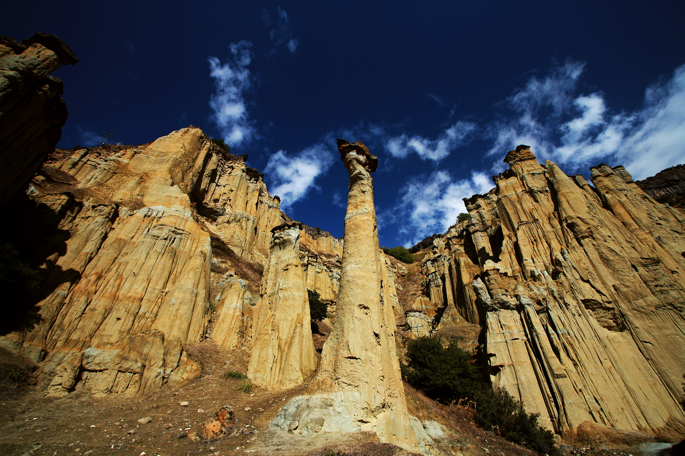

Kuladokya
Milli Parklar Genel Müdürlüğü tarafından doğal sit alanı ilan edilen Kuladokya – Kula Peri Bacaları, İzmir-Ankara yolunun 156. kilometresinde, Burgaz Köyü yakınında yer alır. Kapadokya Peri Bacaları’na rakip olarak gösterilen Kuladokya’nın hangi yıllarda meydana geldiği bilinmezken, şiddetli yağmur ve rüzgarlar sonucunda oluştuğu tahmin edilmektedir. Kula'ya 16 kilometre uzaklıkta bulunan Kulodakya, Anadolu'nun tabiat harikalarına bir örnektir. Kula'dan özel aracınızla bu peri bacalarına gelmek ise oldukça kolaydır. Manisa gezilecek yerler arasındaki en önemli doğa harikası olan Kuladokya'yı görmeden geçmemenizi tavsiye ederiz.
